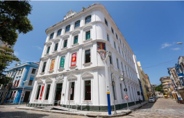
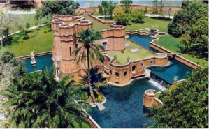
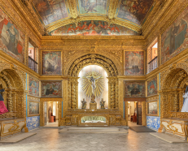
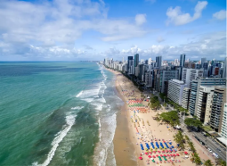

Paço do Frevo
Um espaço cultural dedicado ao frevo, ritmo típico pernambucano.

Instituto Ricardo Brennand
Um dos museus mais impressionantes do Brasil, com arquitetura inspirada em castelos medievais.

Capela Dourada
Uma igreja histórica com interior riquíssimo em detalhes dourados.

Praia de Boa Viagem
A praia mais famosa da cidade, com águas mornas e piscinas naturais formadas por recifes.